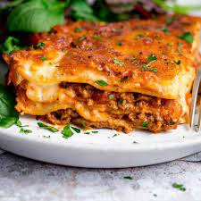

Classic lasagne
home

Lasagne is one of my favourite dishes to both make and eat, it's simple and delicious. With this recipe
you can make your own scrumptious lasagne and share it with your family and friends! Or just
eat it all yourself, no judgement over here!
INGREDIENTS
- 2 tbsp olive oil
- 750g lean beef mince
- 90g pack proscuitto
- tomato sauce
- 200ml hot beef stock
- 300g pack fresh lasagne sheets
- white sauce
- 125g ball mozzarella, torn into thin strips
METHOD
- To make the meat sauce, heat 2 tbsp olive oil in a frying pan and cook 750g lean beef mince in two
batches for about 10 mins until browned all over.
- Finely chop 4 slices of prosciutto from a 90g pack, then stir through the meat mixture.
- Pour over 800g passata or half our basic tomato sauce recipe and 200ml hot beef stock, then season.
- Bring up to the boil, then simmer for 30 mins until the sauce looks rich.
- Heat oven to 180C/fan/160C/gas 4 and lightly oil an ovenproof dish (about 30 x 20cm)..
- Spoon one third of the meat sauce into the dish, then cover with some fresh lasagne sheets from a 300g
pack. Drizzle over roughly 130g ready-made or homemade white sauce.
- Repeat until you have 3 layers of pasta. Cover with the remaining 390g white sauce, making sure you
can’t see any pasta poking through.
- Scatter 125g torn mozzarella over the top.